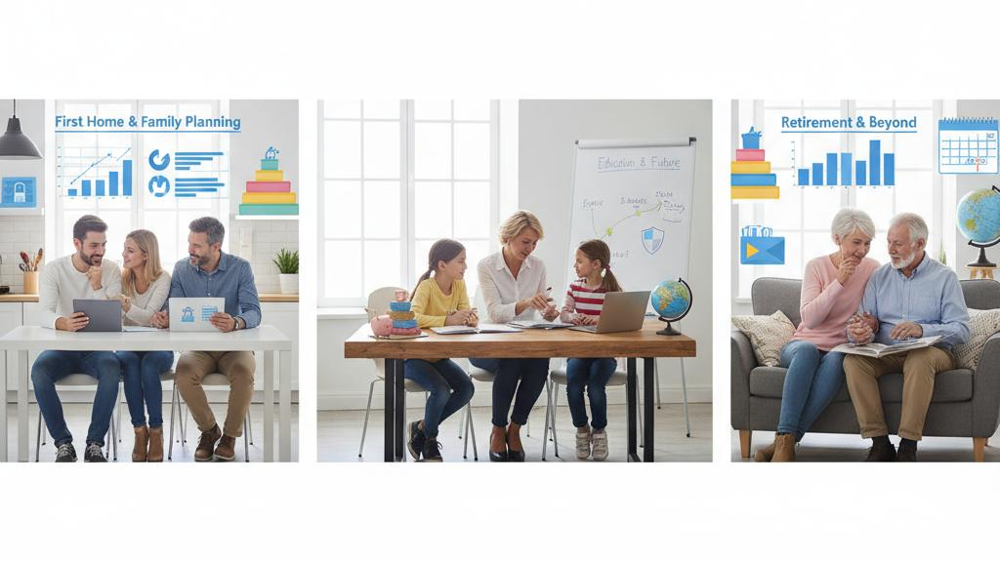

こんにちは、
りょうです。
新NISAが始まり、
「周りがやっているから」
「乗り遅れまい」
と焦って資産運用をスタートする50代・60代の方が急増しています。
しかし、
ちょっと待ってください。
FP（ファイナンシャルプランナー）として日々多くの方の相談に乗っていると、
「なんとなくランキング上位だから」
「銀行の窓口で勧められたから」
という理由で、
大切に貯めてきた老後資金を危険に晒している方があまりにも多いことに驚かされます。
結論から言います。
世の中に数千本ある投資信託のうち、
99%は僕たちが買う必要のない商品です。
今回は、
50代から新NISAを始める方が絶対に知っておくべき「投資信託の罠」と、
安全に資産を構築するための正しいステップについて徹底的に解説します。
50代・60代の資産運用は、
20代・30代の若者とは決定的に違います。
若者には「時間」という最大の武器があり、
暴落が起きても10年、
20年かけて回復を待つことができます。
しかし、
定年が視野に入ってきた世代には、
失敗を取り戻すための時間が限られています。
それにも関わらず、
多くの方が陥ってしまう代表的な罠が存在します。
「退職金が入ったから」「長年付き合いのあるメインバンクだから安心だろう」と、
とりあえず銀行の窓口へ相談に行くのはめちゃくちゃ危険です。
なぜなら、
金融機関の窓口で勧められる商品の多くは、
「あなたにとって一番良い商品」ではなく、
「金融機関にとって一番儲かる商品」であることが少なくないからです。
金融機関もビジネスです。
窓口の担当者にはノルマがあり、
販売手数料の高い商品を売らなければならないという現実があります。
シニア層に特に人気なのが「毎月分配型」の投資信託です。
「毎月お小遣いのように現金が入ってくる」と聞くと魅力的に聞こえますが、
これは大きな落とし穴です。
実は、
運用益が出ていないのに無理やり分配金を支払っているケースがめっちゃ多く、
自分のお金を削って、
自分に払い戻しているだけというタコ足配当状態になっている商品が散見されます。
これでは資産が増えるどころか、
気づけば元本が大きく目減りしてしまいます。
現在、
日本で購入できる投資信託は約6,000本以上あります。
しかし、
その中から将来の資産形成に本当に役立つものは、
ほんの一握りです。
99%は不要と言い切れる明確な理由があります。
投資信託には、
買う時の「買付手数料」だけでなく、
持っている間ずっとかかり続ける「信託報酬（管理費用）」というものがあります。
例えば、
信託報酬が年間1.5%のアクティブファンドと、
0.1%のインデックスファンドを比べてみましょう。
1,000万円を10年間運用した場合、
手数料だけで100万円以上もの差が生まれます。
派手な広告を出しているファンドや、
複雑な仕組みを持ったテーマ型ファンド（AI関連、
ロボット関連など）の多くは、
この信託報酬が高く設定されています。
僕たち投資家が確実に見込めるのは「未来のリターン」ではなく「確実にかかるコスト」です。
コストが高い時点で、
その商品は選択肢から外すべきなのです。
手数料が高い「アクティブファンド（専門家が銘柄を選んで市場平均を上回ることを目指すファンド）」の多くが、
長期的に見ると、
ただ市場全体に連動するだけの「インデックスファンド」の成績に負けているという残酷なデータがあります。
高い手数料を払って運用を任せても、
安い手数料の機械的な運用に勝てないのが現実です。
だからこそ、
高コストな投資信託（＝99%の商品）は不要なのです。
では、
99%の不要な商品を避けた上で、
50代・60代は何を買えばいいのでしょうか？
僕の基本方針はめっちゃシンプルです。
迷っている方は、
以下のステップに沿って進めてください。
投資が初めての方や、
何を買えばいいか分からない方は、
全世界の株式に分散投資ができる「オルカン」を愚直に積み立てるだけで十分です。
オルカンは信託報酬が業界最安水準（約0.05%）でありながら、
これ1本で世界中の成長企業に分散投資が完了します。
窓口で勧められる高い手数料の商品を買うくらいなら、
迷わずオルカンを選んでください。
まずは少額から始め、
市場の値動きに慣れることが第一歩です。
数年コツコツと積立を続け、
投資資産の金額がまとまった額（数百万円〜）になってきたら、
次のステップに進みます。
ここで重要なのが「債券」を組み合わせて、
リスクをマイルドにすることです。
オルカンはあくまで「株式100%」の投資信託です。
株式はリターンが高い反面、
リーマンショックのような経済危機が起きれば一時的に資産が半減するリスクを持っています。
定年が近づき、
資産を取り崩す時期が視野に入ってきた50代・60代が「株式100%」のまま突っ走るのはマジで危険です。
そこで、
株式とは違う値動きをする「安全資産である債券」をポートフォリオに加えることで、
暴落時のクッションを作るのです。
「増やすフェーズ（オルカン）」から、
「守りながら増やすフェーズ（オルカン＋債券）」へ。
これが50代・60代の王道の投資戦略です。
**A. 全く遅くありません。
**
「人生100年時代」と言われる今、
50代からでも運用期間は20年〜30年と十分にあります。
ただし、
20代と同じようなハイリスクな投資ではなく、
前述したように成長（株式）と守り（債券）を意識した手堅い運用を心がけることが大切です。
**A. 焦って無理に埋める必要はありません。
**
手元の現金を一気に投資に回してしまうのはめちゃくちゃ危険です。
まずは生活防衛資金（絶対に減らしてはいけない現金）を確保し、
残りの余裕資金で少額から毎月コツコツと積み立てていくことをお勧めします。

新NISAのスタートにより、
多くの情報が溢れかえっていますが、
やるべきことは実はとてもシンプルです。
周りがやっているからと焦って飛びつき、
銀行で勧められたよく分からない投資信託を買ってしまうことこそが、
最も避けるべき「老後破産の入り口」です。
1. 銀行の窓口には絶対に行かない
2. 初心者は低コストの「オルカン」からスタート
3. 資産が大きくなってきたら「債券」を混ぜて守りを固める
この3つの基本方針を守るだけでも、
あなたの老後資金の安全性は劇的に高まります。
もし「自分の場合はオルカンと債券の比率をどうすべきか分からない」「今の銀行残高でどう運用すべきか迷っている」という方は、
ぜひ一度僕らのようなお金の専門家の視点を取り入れてみてください。